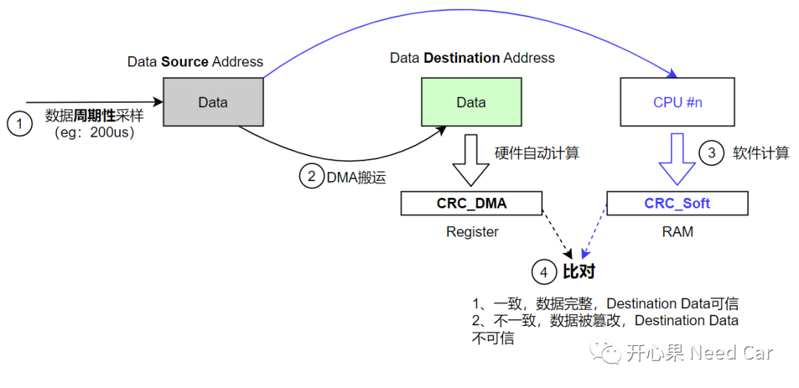
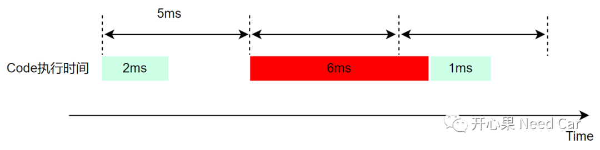
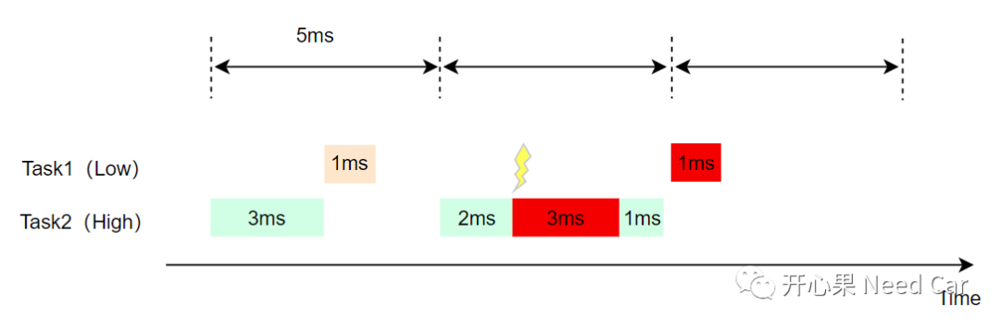
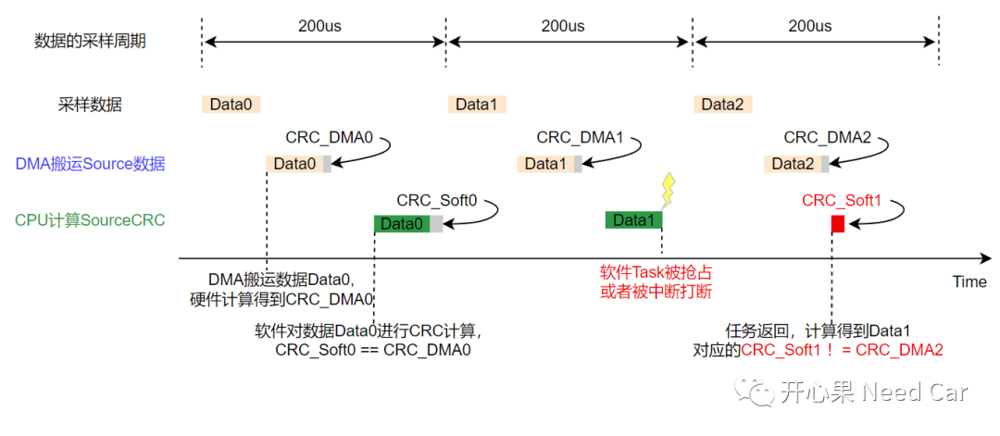
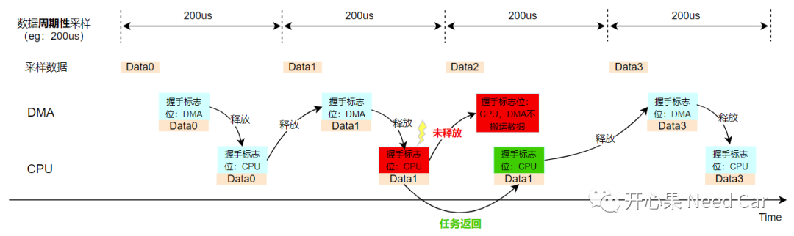

车辆智能化的提高，给我们带来了很多舒适性体验，eg：脚踢门功能、无钥匙进入功能、远程启动功能、自动驾驶等等。但是，作为汽车人，我们清楚：这些美好的体验，必须以"安全"为前提。所以，涉及到驾/乘人员安全性的任何环节，都需要进行功能安全评估。软件开发过程中，功能安全的设计随处可见。本文，讨论一个具体的工程案例：DMA（Direct Memory Access）CRC校验失败，导致车辆功能降级。
车辆启动时，发现：车辆无法启动，并有对应的故障文言提示。为了更进一步确认故障所属类型及信息，自然需要读取车辆故障（DTC：Diagnostic Trouble Code，诊断故障码）及DTC对应的快照数据（Snapshot Data）和拓展数据（Extended Data）。通过分析DTC及DTC关联的快照信息，发现：DMA硬件CRC值和软件CRC值不一致导致。（一）DMA
前文讨论过DMA，可以参考《嵌入式开发：DMA何时使用更好？》。DMA的主要作用就是搬运数据，分担CPU压力。那么，DMA又是如何与功能安全扯上关系的呢？答：既然DMA的工作是搬运数据，当DMA搬运一些关键数据时，就需要确保搬运这些关键数据的过程中，数据没有被篡改，即：确保搬运数据的过程是安全的。为了确保这一点，DMA搬运数据时，自动计算CRC（本文称为CRC_DMA），CRC_DMA自动存储在DMA所属的寄存器中。这种计算CRC的方式，也就是常说的硬件CRC计算。数据本身就是为了给软件程序使用，所以，需要使用此数据的软件程序，在使用这些数据前，会使用相同的CRC算法，对数据进行计算，得到CRC_Soft（存放在RAM中），如果CRC_DMA == CRC_Soft，说明DMA搬运数据过程中，数据没有被篡改，数据可信。数据搬运及CRC比对流程，如下所示：

（一）Task抖动
软件计算CRC，也就是某个CPU计算CRC。CPU和DMA属于不同的硬件，两者按照各自的频率工作，因此，两者计算CRC的时机会存在一定差异，即：异步计算。我们知道：Task有不同的优先级、软件系统中也有大量的中断，所以，Task运行过程中，CPU处理Task不一定及时，因此，就会造成Task抖动的问题。Task的抖动理解如下：

如上，一个5ms Task，CPU运行该Task Code的时间是1ms。但是，由于任务抢占或者中断打断等原因。CPU某时负载过高，不能在5ms时间内完整的执行一遍Code，需要更多的时间（＞1ms）才能完成，这就造成了我们所说的Task抖动。
Task1、Task2周期均为5ms，Task1优先级低，对应的代码完整执行一遍需要1ms；Task2优先级高，对应的代码完整执行一遍需要3ms。正常情况下，5ms的时间内，Task1和Task2的代码均可以在5ms周期内执行一次。但是，当程序被中断程序抢占，且抢占时间过长（eg：3ms），可能会导致低优先级Task（eg：Task1）的程序无法在5ms的周期内完整的执行一次，被迫延迟，如下所示：

当Task产生抖动时，会带来什么问题呢？如下所示：

- 数据（Data）被周期性采样（eg：200us）;
- 每次数据采样结束后，使能DMA搬运数据，DMA搬运完成的同时，将计算的CRC（eg：CRC_DMA0）自动存放在硬件寄存器中；
- DMA完成数据搬运后，如果软件（CPU）能及时对数据（eg：Data0）进行完整性计算，得到CRC_Soft0，则不会出问题。因为，DMA和CPU均使用相同的数据（Data0）、相同的CRC算法（eg：CRC32），所以，CRC_DMA0 == CRC_Soft0；
- DMA搬运完Data1，得到对应的CRC_DMA1，但是，当CPU对Data1进行CRC计算时，由于Task被优先级更高的任务或者中断抢占，CRC_Soft1计算被迫延迟；
- DMA搬运完Data2，得到对应的CRC_DMA2，同时，被打断的Task重新返回程序，得到Data1的CRC_Soft1。但是，DMA硬件寄存器中的CRC值已经被替换成CRC_DMA2，显然CRC_Soft1 != CRC_DMA2，进而导致程序报错。
本文问题的本质：数据一致性被破坏。所以，理解了问题的本质，就能针对性地提出解决方案。- 对于同一个CPU，可以通过开关中断、设置握手机制进行数据一致性保护；
- 对于多核CPU，可以通过中断向量锁方式，确保数据一致性。
保护数据一致性的策略很多，需要结合项目实际，具体分析。本文，针对本文问题给出一个解决方案：增加握手标志。具体流程如下所示：

如上图，在第二个采样循环内，软件Task被高优先任务或者中断抢占，但是，CPU占据着握手标志位，在第三个采样循环内，DMA在使能搬运数据之前，先判断握手标志位状态，如果握手标志位依然被CPU占用，则此次循环不再搬运数据，等到下一个循环，CPU释放握手标志位以后再搬运数据，以此保证数据的一致性。
点击下方关注，一起聊聊Autosar/嵌入式，如果需要，联系作者进群，给你更专业的解答